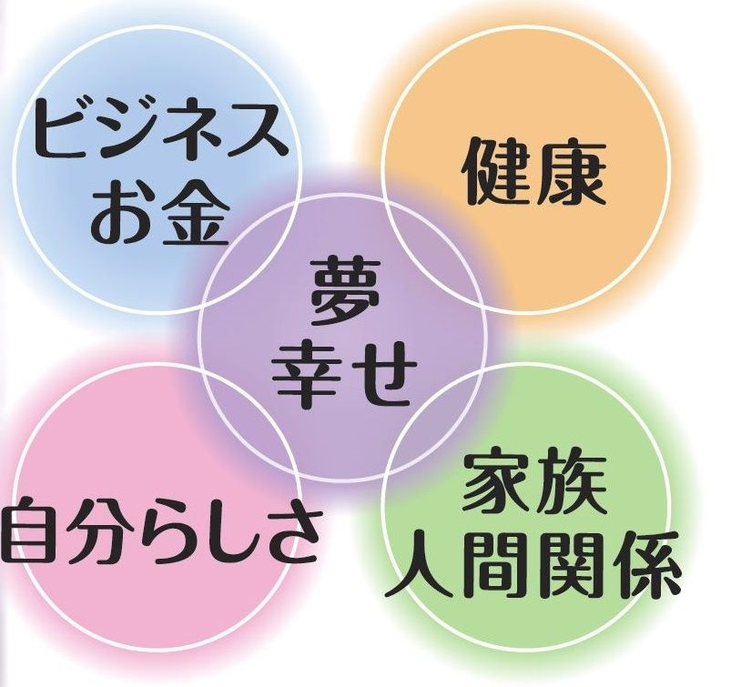

はじめに
「 あなたの夢は何ですか？」
「 夢かぁ。子供の頃や若い頃は夢もあったけれど、今では日常の毎日が忙しすぎて。なかなか夢なんて......」
「 あなたの夢は何ですか？ 」と聞かれて、「 はい。私の夢は 〜〜です。そのために毎日、こんな努力を続けているんです。」
このように明確に答えられる人は、そんなに多くはないのではないでしょうか。
このように明確に答えられる人は、そんなに多くはないのではないでしょうか。
スピードが早い情報化社会、日々、めまぐるしく変化の激しい現代社会では、日々やらなければならないことが多すぎて「夢」とか「心からやりたいことは？」
そのように聞かれても、すぐに答えられる人のほうが少ないことと思います。
そのように聞かれても、すぐに答えられる人のほうが少ないことと思います。
けれど、僕はいつも思っていることがあります。
誰にでも心の奥底では、忘れかけていた子供の頃の夢や憧れ、本当は自分のやりたいこと、夢や希望、ワクワクすることがあるはずだって思うのです。
それらを夢とか希望というのなら、その人にとって宝物のようなものをそれを追いかけてつかみ、喜びをつかみたい、そしてさらに希望と可能性の中を未来へ生きていきたいと心の中で誰もが願っているものだと僕は思うのです。
誰にでも心の奥底では、忘れかけていた子供の頃の夢や憧れ、本当は自分のやりたいこと、夢や希望、ワクワクすることがあるはずだって思うのです。
それらを夢とか希望というのなら、その人にとって宝物のようなものをそれを追いかけてつかみ、喜びをつかみたい、そしてさらに希望と可能性の中を未来へ生きていきたいと心の中で誰もが願っているものだと僕は思うのです。
誰でも、ほんの少しのヒントで
今日から未来に夢や希望を持つことができる。
今日から未来に夢や希望を持つことができる。
そして、夢や希望の中、未来へ自分を輝かせながら生きていける。
そのことを伝えたくて
２年前から「人の夢を応援する言葉」のブログ記事を書いてきました。
２年前から「人の夢を応援する言葉」のブログ記事を書いてきました。
その記事が今回、一冊の本になりました。
２年前から書き続けてきた「夢を応援する言葉」ブログ。
編集して頂いたら、３００ページ以上のかなりの量のメッセージになりました。
今の時代の日本はあらゆるものがそろった豊かな時代であることは間違いないと
思います。
しかし、その反面、社会は複雑化して日々変化が大きく、ストレスも多く生きにくい、
だからそんな社会の中で心が折れてしまう人もいるのだろうと思うことがあります。
けれど、どんな時代であっても、人は夢と希望の力があれば
それは心の原動力となって
明日への一歩をまた生きていけると思うのです。
僕も日々、必死に毎日を生きています。
思います。
しかし、その反面、社会は複雑化して日々変化が大きく、ストレスも多く生きにくい、
だからそんな社会の中で心が折れてしまう人もいるのだろうと思うことがあります。
けれど、どんな時代であっても、人は夢と希望の力があれば
それは心の原動力となって
明日への一歩をまた生きていけると思うのです。
僕も日々、必死に毎日を生きています。
同じように、この時代を一生懸命に生きていこうとしている人たちに向けて、
夢や希望の力になるように、未来を生きる力になれるように書き続けてきたものです。
夢や希望の力になるように、未来を生きる力になれるように書き続けてきたものです。
そのメッセージの中で一つでもあなた自身やあなたの大切な人、
ご家族の未来への原動力にしていただけたら最高に嬉しく思っています。
ご家族の未来への原動力にしていただけたら最高に嬉しく思っています。
本書はぜんぶで、１８８のメッセージがありますが、どこから読んでいただいても、あなたの夢を応援するメッセージになっています。
ぜひ、ご自分の未来に夢をどうやって実現していこうか、想像しながら、楽しみながら読んで欲しいと思います。
それでは！
あなたの夢が叶う世界へ！ ようこそ！
あなたの夢が叶う世界へ！ ようこそ！
スタートしていきましょう！
（有）夢創造JAPAN 中村 順
✨特別プレゼント動画✨
「夢を叶える人が必ず実践している７つの秘訣」のお知らせ✨
ご購入特典として、
スペシャル動画セミナー「夢を叶える人が必ず実践している７つの秘訣」（NO1からNO10）
をプレゼントしてます。
あなたの夢を叶える力として活用ください。
下記のリンクをクリックして、アドレスを登録ください。
メールにて動画が配信されますので、特別プレゼント
「夢を叶える人が必ず実践している７つの秘訣」スペシャル動画を受け取ってください。→ https://88auto.biz/goodflower/registp.php?pid=4

{kind=link}
{kind=link}